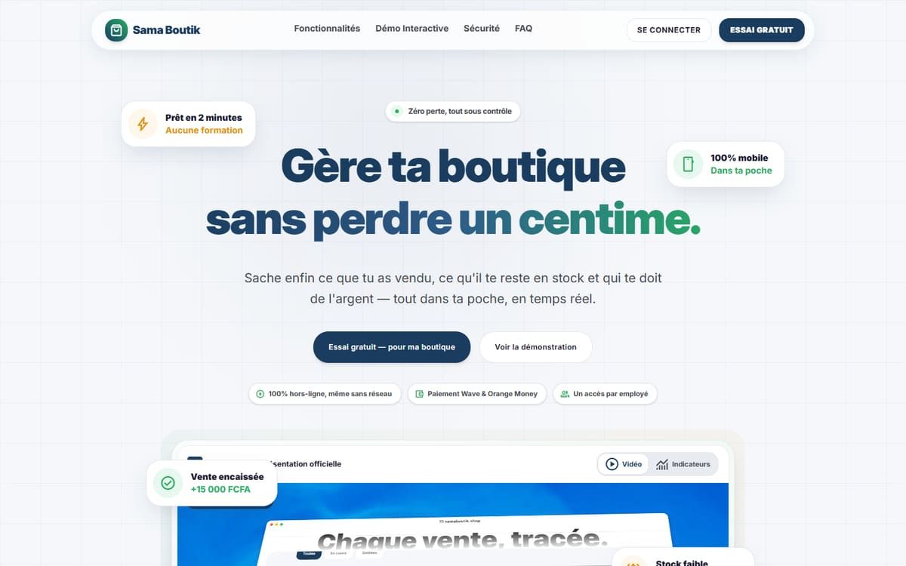
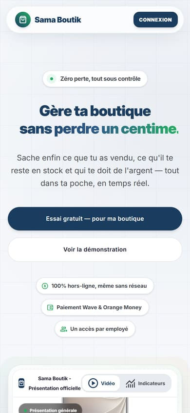

En ligne
Sama Boutik
Une application de gestion commerciale qui tient dans un téléphone : la caisse, le stock, les dettes clients et les paiements Wave et Orange Money, même sans réseau, avec un accès par employé. Elle sert les commerçants, et aussi les grossistes et les distributeurs.
Le problème
Quand une boutique se gère sur un bout de papier, on perd de l'argent sans s'en rendre compte. Les ventes, le stock et les dettes des clients se mélangent, et il devient difficile de savoir qui doit combien.
Ce que fait l'application
- Enregistrer les ventes à la caisse
- Suivre les stocks
- Gérer les dettes des clients, avec une alerte en cas de retard
- Fonctionner hors ligne, même sans réseau
- Gérer les paiements Wave et Orange Money
- Donner un accès à chaque employé ou vendeur
- Pour les grossistes et distributeurs : suivre les boutiques clientes à crédit et les tournées des vendeurs, et rapprocher la caisse
Mon rôle
Je me suis occupé de la base de données et du back-end.
 React
React Tailwind CSS
Tailwind CSS Vite
Vite Supabase
Supabase